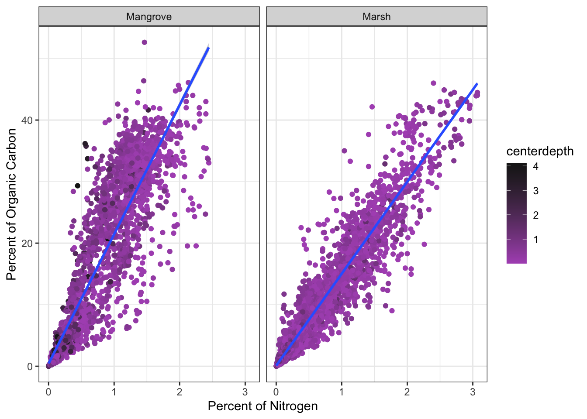

Last updated: 2024-04-24
Checks: 7 0
Knit directory: WebProj/
This reproducible R Markdown analysis was created with workflowr (version 1.7.1). The Checks tab describes the reproducibility checks that were applied when the results were created. The Past versions tab lists the development history.
Great! Since the R Markdown file has been committed to the Git repository, you know the exact version of the code that produced these results.
Great job! The global environment was empty. Objects defined in the global environment can affect the analysis in your R Markdown file in unknown ways. For reproduciblity it’s best to always run the code in an empty environment.
The command set.seed(20240220) was run prior to running
the code in the R Markdown file. Setting a seed ensures that any results
that rely on randomness, e.g. subsampling or permutations, are
reproducible.
Great job! Recording the operating system, R version, and package versions is critical for reproducibility.
Nice! There were no cached chunks for this analysis, so you can be confident that you successfully produced the results during this run.
Great job! Using relative paths to the files within your workflowr project makes it easier to run your code on other machines.
Great! You are using Git for version control. Tracking code development and connecting the code version to the results is critical for reproducibility.
The results in this page were generated with repository version 87b9886. See the Past versions tab to see a history of the changes made to the R Markdown and HTML files.
Note that you need to be careful to ensure that all relevant files for
the analysis have been committed to Git prior to generating the results
(you can use wflow_publish or
wflow_git_commit). workflowr only checks the R Markdown
file, but you know if there are other scripts or data files that it
depends on. Below is the status of the Git repository when the results
were generated:
Ignored files:
Ignored: .DS_Store
Ignored: .Rproj.user/
Ignored: data/.DS_Store
Ignored: data/CCN/.DS_Store
Ignored: data/carbon/.DS_Store
Ignored: data/combined/.DS_Store
Ignored: data/raw_data/.DS_Store
Ignored: data/refined/.DS_Store
Untracked files:
Untracked: Checking.csv
Note that any generated files, e.g. HTML, png, CSS, etc., are not included in this status report because it is ok for generated content to have uncommitted changes.
These are the previous versions of the repository in which changes were
made to the R Markdown (analysis/BlueNitrogen.Rmd) and HTML
(docs/BlueNitrogen.html) files. If you’ve configured a
remote Git repository (see ?wflow_git_remote), click on the
hyperlinks in the table below to view the files as they were in that
past version.
| File | Version | Author | Date | Message |
|---|---|---|---|---|
| html | 87b9886 | phillipriv9 | 2024-04-24 | Build site. |
| Rmd | 1d1b202 | phillipriv9 | 2024-04-24 | wflow_publish("analysis/BlueNitrogen.Rmd") |
| html | f67f9d9 | phillipriv9 | 2024-04-24 | Build site. |
| Rmd | 807c243 | phillipriv9 | 2024-04-24 | wflow_publish("analysis/BlueNitrogen.Rmd") |
| html | 6ee822f | phillipriv9 | 2024-04-24 | Build site. |
| html | 8af1533 | phillipriv9 | 2024-04-24 | Build site. |
| Rmd | 321ae6f | phillipriv9 | 2024-04-24 | wflow_publish("analysis") |
| html | ddcccf8 | phillipriv9 | 2024-04-23 | Build site. |
| Rmd | 89b3ef4 | phillipriv9 | 2024-04-23 | wflow_publish("analysis") |
| html | fbfaabc | phillipriv9 | 2024-04-18 | Build site. |
| html | 20d24e9 | phillipriv9 | 2024-04-18 | Build site. |
| html | 63f544c | phillipriv9 | 2024-04-18 | Build site. |
| Rmd | 861b868 | phillipriv9 | 2024-04-18 | wflow_publish("analysis/BlueNitrogen.Rmd") |
| Rmd | a995651 | phillipriv9 | 2024-04-18 | Added Blue Nitrogen Page |
The Blue Nitrogen project is related related to a paper being published by my two academic mentors Dr. Adam Langley and Dr. Samantha Chapman. The idea is similar to that of blue carbon in that a large portion of the nitrogen we released into the world ends up being stored in our marine and coastal ecosystems. This project is to introduce the concept into the literature and demonstrate it’s establishment across numerous complied datasets. My role in the project was the help with the creation of models, synthesis of the overall datasets, and helping with the logistical sharing of the dataset.
The bulk of this was already done before I was brought into the project my Dr. Adam Langley. I, however, helped clean up some of the newer datasets we received and also helped troubleshoot issue within the code designed to combine all the datasets into one. I have provided various samples of code for different parts of the process.
### The first step was taking raw data provided to us by a collaborator and cleaning up there data and then exporting it. I have the code that we most frequently executed for this step below
## import data from Rovai et al. 2018
#These libraries are used both here and through the rest of the datasynthesis
library(magrittr)
library(tidyverse)── Attaching core tidyverse packages ──────────────────────── tidyverse 2.0.0 ──
✔ dplyr 1.1.4 ✔ readr 2.1.5
✔ forcats 1.0.0 ✔ stringr 1.5.1
✔ ggplot2 3.5.0 ✔ tibble 3.2.1
✔ lubridate 1.9.3 ✔ tidyr 1.3.1
✔ purrr 1.0.2
── Conflicts ────────────────────────────────────────── tidyverse_conflicts() ──
✖ tidyr::extract() masks magrittr::extract()
✖ dplyr::filter() masks stats::filter()
✖ dplyr::lag() masks stats::lag()
✖ purrr::set_names() masks magrittr::set_names()
ℹ Use the conflicted package (<http://conflicted.r-lib.org/>) to force all conflicts to become errorslibrary(ggplot2)
#We are reading in the data file provided to us
input_data01 <- read.csv("data/raw_data/acrf.csv")
#Removing empty row
input_data01 <- input_data01[-c(48, 99), ]
#This is ensuring the Percent Nitrogen column is treated as numerical. This was causing problems in the combine all portion of the synthesis
input_data01$N_perc <- as.numeric(input_data01$N_perc)
# add information, mainly the name of the source for the dataset and author of the papers initials
source_name <- "ruiz-fernadez"
author_initials <- "rf"
# Prepping for export
export_data01 <- input_data01 %>%
dplyr::select(study_id, site_id, core_id, Habitat_type, Year_collected,
Latitude, Longitude, U_depth_m, L_depth_m, OC_perc, N_perc, BD_reported_g_cm3,DOI)
# exporting out to a csv file
path_out = 'data/refined/'
export_file <- paste(path_out, source_name, ".csv", sep = '')
export_df <- export_data01
write.csv(export_df, export_file)
#### After this we synthesized a our csv files into two seperate data-files based of parameters related to how they were collected, who collected them, and other associations. The bulk of this code was written by Dr. Adam Langley, with myself cleaning up/ simplyfing certain steps and providing further annotations.
library(purrr)
# Set the path to the folder containing your CSV files
folder_path <- "data/CCN/"
# Get a list of all CSV files in the folder
csv_files <- list.files(path = folder_path, pattern = "\\.csv$", full.names = TRUE)
# Read all CSV files into a list of data frames
list_of_dfs <- map(csv_files, ~{
df <- read.csv(.)
columns_to_convert <- c("Latitude", "Longitude", "Plot", "core_id", "fraction_nitrogen", "Habitat_type")
for (col in columns_to_convert) {
if (col %in% colnames(df)) {
df <- mutate(df, !!col := as.character(!!sym(col)))
}
}
return(df)
})
# Check the structure of each data frame. Used to make that we didn't have any incorrect data types. I am not having it execute here because it would take a ton of space on the page.
#walk(list_of_dfs, ~str(.))
# Combine all data frames into one
combined_data <- bind_rows(list_of_dfs, .id = "file_id")
# Add a new column with the value "CCN" for every row
combined_data <- mutate(combined_data, Database = "CCN") %>%
mutate(study_site_core = paste(study_id, site_id, core_id, sep = "_"))
# Reorganize columns to make "Database" the first column
combined_data <- select(combined_data, Database, everything())
# Select only certain columns
selected_columns <- c("Database", "study_id", "study_site_core" , "site_id", "file_id", "core_latitude", "core_longitude", "core_id", "fraction_nitrogen", "fraction_total_nitrogen",
"depth_min","depth_max","dry_bulk_density","core_year","salinity_class", "Habitat_type",
"fraction_carbon","fraction_carbon_measured", "fraction_carbon_modeled", "fraction_organic_carbon" )
combined_data <- select(combined_data, all_of(selected_columns))
# Rename selected columns
combined_data <- rename(combined_data,
BD_reported_g_cm3=dry_bulk_density
)
#convert fractions to percents
combined_data2 <- combined_data%>%
mutate(OC_perc = as.numeric(fraction_carbon) * 100,
OC_perc = ifelse(is.na(OC_perc), as.numeric(fraction_organic_carbon) * 100, OC_perc),
OC_perc = ifelse(is.na(OC_perc), as.numeric(fraction_carbon_measured) * 100, OC_perc),
N_perc = as.numeric(fraction_nitrogen) * 100,
N_perc = ifelse(is.na(N_perc), as.numeric(fraction_total_nitrogen) * 100, N_perc),
U_depth_m = as.numeric(depth_min/100),
L_depth_m = as.numeric(depth_max/100),
Latitude = core_latitude,
Longitude = core_longitude)
# Specify the folder for saving the combined data
output_folder <- "data/combined"
# Create the output folder if it doesn't exist
if (!dir.exists(output_folder)) dir.create(output_folder)
# Write the combined data frame to a new CSV file in the "Combined" folder
output_file <- file.path(output_folder, "CCN_combined_data.csv")
write.csv(combined_data2, output_file, row.names = FALSE)
#### The final steps was combining all the data from the two seperate databases we made into one large data frame so we could perform our analysis and modelling with ease. Here we had the problem of some datasets treating the N percent value as a character hence the as.factor() command from earlier. This script was largely written by Dr. Adam Langley, with me providing some troubleshooting and annotating.
library(readr)
df1 <- read.csv("data/combined/Maxwell_combined_data.csv")
df2 <- read.csv("data/combined/CCN_combined_data.csv")
# make coordinates characters
df1 <- df1 %>% mutate(Latitude = as.character(Latitude), Longitude = as.character(Longitude))
df2 <- df2 %>% mutate(Latitude = as.character(Latitude), Longitude = as.character(Longitude))
df3 <- bind_rows(df1, df2, .id=NULL)
df4 <- df3 %>%
dplyr::select(Database, Source, study_id, study_site_core, site_id, Site, Plot, core_id, Habitat_type, Year_collected,
Latitude, Longitude, U_depth_m, L_depth_m, OC_perc, N_perc, BD_reported_g_cm3, DOI)
# Recategorize groups and create a new variable 'Recategorized_Habitat'
df4 <- df4 %>%
mutate(Habitat = case_when(
grepl("saltmarsh", Habitat_type, ignore.case = TRUE) ~ "marsh",
grepl("salt marsh", Habitat_type, ignore.case = TRUE) ~ "marsh",
grepl("marsh", Habitat_type, ignore.case = TRUE) ~ "marsh",
grepl("mangrove", Habitat_type, ignore.case = TRUE) ~ "mangrove",
grepl("seagrass", Habitat_type, ignore.case = TRUE) ~ "seagrass",
grepl("mudflat", Habitat_type, ignore.case = TRUE) ~ "mudflat",
grepl("tidal flat", Habitat_type, ignore.case = TRUE) ~ "mudflat",
grepl("high sabkha", Habitat_type, ignore.case = TRUE) ~ "mudflat",
grepl("low sabkha", Habitat_type, ignore.case = TRUE) ~ "mudflat",
grepl("microbial mat", Habitat_type, ignore.case = TRUE) ~ "mudflat",
grepl("peat", Habitat_type, ignore.case = TRUE) ~ "marsh",
TRUE ~ "Other"
))
df5 <- df4 %>%
mutate(CN = OC_perc/N_perc, centerdepth = U_depth_m + L_depth_m/2)
# Specify the folder for saving the recategorized data
output_folder_recategorized <- "data/Combined"
# Create the output folder if it doesn't exist
if (!dir.exists(output_folder_recategorized)) dir.create(output_folder_recategorized)
# Eliminate rows with NA in 'Source' or 'N_perc'
df6 <- df5 %>%
filter(!is.na(N_perc), !is.na(site_id))
# Write the recategorized data frame to a new CSV file in the "Recategorized" folder
output_file_recategorized <- file.path(output_folder_recategorized, "AllCombined.csv")
write.csv(df6, output_file_recategorized, row.names = FALSE)After we had the full dataset we began creating models. Below are some of the examples of the models made with the project
library(dplyr)
library(tidyverse)
library(lme4)Loading required package: Matrix
Attaching package: 'Matrix'The following objects are masked from 'package:tidyr':
expand, pack, unpackAllCombined <- read_csv("data/combined/AllCombined.csv")Rows: 9253 Columns: 21── Column specification ────────────────────────────────────────────────────────
Delimiter: ","
chr (10): Database, Source, study_id, study_site_core, site_id, Site, core_i...
dbl (11): Plot, Year_collected, Latitude, Longitude, U_depth_m, L_depth_m, O...
ℹ Use `spec()` to retrieve the full column specification for this data.
ℹ Specify the column types or set `show_col_types = FALSE` to quiet this message.AllCombined$Latitude <- as.numeric(AllCombined$Latitude)
df1 <- AllCombined
df2 <- df1[! (is.infinite(df1$CN) | is.na(df1$CN)), ]
df3 <- df2 %>%
filter(Habitat %in% c("marsh", "mangrove"), CN > 5, CN < 100)
df3 <- df3[!is.na(df3$centerdepth), ]
#Could try pivot longer to help automate that process
#plot nested within source
# variability derives from different experimenters sampling different sites.
model <- lmer(N_perc ~ OC_perc*Habitat + centerdepth + (1 | study_id/core_id), data = df3, REML = FALSE)
#This null model is looking at the interaction of Oxygen concentration percent with Habitat type.
model.interaction.null <- lmer(N_perc ~ OC_perc+Habitat + centerdepth + (1 | study_id/core_id), data = df3, REML = FALSE)
#Null model looking at center depth
model.centerdepth.null <- lmer(N_perc ~ OC_perc*Habitat + (1 | study_id/ core_id), data=df3, REML = FALSE)Warning in checkConv(attr(opt, "derivs"), opt$par, ctrl = control$checkConv, :
Model failed to converge with max|grad| = 0.00261889 (tol = 0.002, component 1)model.centerdepth.nullLinear mixed model fit by maximum likelihood ['lmerMod']
Formula: N_perc ~ OC_perc * Habitat + (1 | study_id/core_id)
Data: df3
AIC BIC logLik deviance df.resid
-8089.945 -8040.504 4051.972 -8103.945 8623
Random effects:
Groups Name Std.Dev.
core_id:study_id (Intercept) 0.1094
study_id (Intercept) 0.1399
Residual 0.1407
Number of obs: 8630, groups: core_id:study_id, 949; study_id, 31
Fixed Effects:
(Intercept) OC_perc Habitatmarsh
0.13073 0.04107 -0.05872
OC_perc:Habitatmarsh
0.01835
optimizer (nloptwrap) convergence code: 0 (OK) ; 0 optimizer warnings; 1 lme4 warnings modelLinear mixed model fit by maximum likelihood ['lmerMod']
Formula: N_perc ~ OC_perc * Habitat + centerdepth + (1 | study_id/core_id)
Data: df3
AIC BIC logLik deviance df.resid
-8279.765 -8223.261 4147.882 -8295.765 8622
Random effects:
Groups Name Std.Dev.
core_id:study_id (Intercept) 0.1101
study_id (Intercept) 0.1383
Residual 0.1390
Number of obs: 8630, groups: core_id:study_id, 949; study_id, 31
Fixed Effects:
(Intercept) OC_perc Habitatmarsh
0.16238 0.03959 -0.05964
centerdepth OC_perc:Habitatmarsh
-0.06096 0.01897 model.interaction.nullLinear mixed model fit by maximum likelihood ['lmerMod']
Formula: N_perc ~ OC_perc + Habitat + centerdepth + (1 | study_id/core_id)
Data: df3
AIC BIC logLik deviance df.resid
-6832.330 -6782.889 3423.165 -6846.330 8623
Random effects:
Groups Name Std.Dev.
core_id:study_id (Intercept) 0.1326
study_id (Intercept) 0.1379
Residual 0.1501
Number of obs: 8630, groups: core_id:study_id, 949; study_id, 31
Fixed Effects:
(Intercept) OC_perc Habitatmarsh centerdepth
0.11614 0.04899 0.02316 -0.04416 #Perfoming likelhood tests to determined the significance of our fixed effects and interactions
#Testing significance of interaction of OC Perc and Habitat
anova(model.interaction.null, model)Data: df3
Models:
model.interaction.null: N_perc ~ OC_perc + Habitat + centerdepth + (1 | study_id/core_id)
model: N_perc ~ OC_perc * Habitat + centerdepth + (1 | study_id/core_id)
npar AIC BIC logLik deviance Chisq Df
model.interaction.null 7 -6832.3 -6782.9 3423.2 -6846.3
model 8 -8279.8 -8223.3 4147.9 -8295.8 1449.4 1
Pr(>Chisq)
model.interaction.null
model < 2.2e-16 ***
---
Signif. codes: 0 '***' 0.001 '**' 0.01 '*' 0.05 '.' 0.1 ' ' 1#Testing significance of centerdepth as
anova(model.centerdepth.null, model)Data: df3
Models:
model.centerdepth.null: N_perc ~ OC_perc * Habitat + (1 | study_id/core_id)
model: N_perc ~ OC_perc * Habitat + centerdepth + (1 | study_id/core_id)
npar AIC BIC logLik deviance Chisq Df
model.centerdepth.null 7 -8089.9 -8040.5 4052.0 -8103.9
model 8 -8279.8 -8223.3 4147.9 -8295.8 191.82 1
Pr(>Chisq)
model.centerdepth.null
model < 2.2e-16 ***
---
Signif. codes: 0 '***' 0.001 '**' 0.01 '*' 0.05 '.' 0.1 ' ' 1#Graph of the Model
graph1 <- ggplot(df3, aes(x = N_perc, y = OC_perc)) +
facet_grid(.~Habitat) +
geom_point(aes(color = centerdepth)) +
geom_smooth(method = lm) +
labs(y = "Percent of Organic Carbon", x = "Percent of Nitrogen", ) +
theme_bw() +
scale_color_gradient(low = "#B057BF", high = "#1A1A1A", space = "Lab")
Hab_labs <- c("mangrove", "marsh")
names(Hab_labs) <- c("Mangrove", "Marsh")
graph1 <- graph1 + facet_grid(. ~Habitat, labeller = labeller(Habitat = c("mangrove" = "Mangrove", "marsh" ="Marsh")))
graph1`geom_smooth()` using formula = 'y ~ x'
| Version | Author | Date |
|---|---|---|
| 8af1533 | phillipriv9 | 2024-04-24 |
sessionInfo()R version 4.3.2 (2023-10-31)
Platform: x86_64-apple-darwin20 (64-bit)
Running under: macOS Sonoma 14.4.1
Matrix products: default
BLAS: /Library/Frameworks/R.framework/Versions/4.3-x86_64/Resources/lib/libRblas.0.dylib
LAPACK: /Library/Frameworks/R.framework/Versions/4.3-x86_64/Resources/lib/libRlapack.dylib; LAPACK version 3.11.0
locale:
[1] en_US.UTF-8/en_US.UTF-8/en_US.UTF-8/C/en_US.UTF-8/en_US.UTF-8
time zone: America/New_York
tzcode source: internal
attached base packages:
[1] stats graphics grDevices utils datasets methods base
other attached packages:
[1] lme4_1.1-35.2 Matrix_1.6-5 lubridate_1.9.3 forcats_1.0.0
[5] stringr_1.5.1 dplyr_1.1.4 purrr_1.0.2 readr_2.1.5
[9] tidyr_1.3.1 tibble_3.2.1 ggplot2_3.5.0 tidyverse_2.0.0
[13] magrittr_2.0.3 workflowr_1.7.1
loaded via a namespace (and not attached):
[1] gtable_0.3.4 xfun_0.43 bslib_0.7.0 processx_3.8.4
[5] lattice_0.22-6 callr_3.7.6 tzdb_0.4.0 vctrs_0.6.5
[9] tools_4.3.2 ps_1.7.6 generics_0.1.3 parallel_4.3.2
[13] fansi_1.0.6 highr_0.10 pkgconfig_2.0.3 lifecycle_1.0.4
[17] farver_2.1.1 compiler_4.3.2 git2r_0.33.0 munsell_0.5.1
[21] getPass_0.2-4 httpuv_1.6.15 htmltools_0.5.8.1 sass_0.4.9
[25] yaml_2.3.8 crayon_1.5.2 later_1.3.2 pillar_1.9.0
[29] nloptr_2.0.3 jquerylib_0.1.4 whisker_0.4.1 MASS_7.3-60.0.1
[33] cachem_1.0.8 boot_1.3-30 nlme_3.1-164 tidyselect_1.2.1
[37] digest_0.6.35 stringi_1.8.3 labeling_0.4.3 splines_4.3.2
[41] rprojroot_2.0.4 fastmap_1.1.1 grid_4.3.2 colorspace_2.1-0
[45] cli_3.6.2 utf8_1.2.4 withr_3.0.0 scales_1.3.0
[49] promises_1.3.0 bit64_4.0.5 timechange_0.3.0 rmarkdown_2.26
[53] httr_1.4.7 bit_4.0.5 hms_1.1.3 evaluate_0.23
[57] knitr_1.45 mgcv_1.9-1 rlang_1.1.3 Rcpp_1.0.12
[61] glue_1.7.0 rstudioapi_0.16.0 vroom_1.6.5 minqa_1.2.6
[65] jsonlite_1.8.8 R6_2.5.1 fs_1.6.3